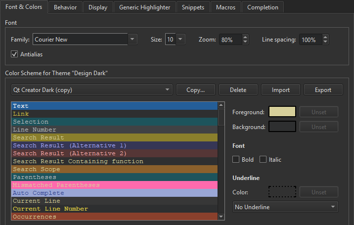

Specifying Code View Settings
Set the font preferences and apply color schemes for syntax highlighting, diff editor, and code analysis results in Preferences > Text Editor > Font & Colors.

Configuring Fonts
You can select the font family and size. You can specify a zoom setting in percentage for viewing the text. You can also zoom in or out by pressing Ctrl++ or Ctrl+-, or by pressing Ctrl and rolling the mouse button up or down. To disable the mouse wheel function, select Preferences > Text Editor > Behavior and deselect the Enable scroll wheel zooming check box.
To improve the readability of text in the editor, adjust the line spacing in the Line spacing field.
Antialiasing is used by default to make text look smoother and more readable on the screen. Deselect the Antialias check box to turn off antialiasing.
Defining Color Schemes
You can select one of the predefined color schemes or create customized color schemes.
To create a color scheme:
- Select Preferences > Text Editor > Fonts & Color > Copy.
- Enter a name for the color scheme and click OK.
- In the Foreground field, specify the color of the selected code element or message.
- In the Background field, select the background color for the code element or message.
The background of the Text element determines the background of the code editor.
- In Font, select Bold or Italic to format the text of the selected code element or message by making it bold or italic.
- In Underline, select the color and style to use for underlining code elements or messages.
When you copy code from Qt Design Studio, it is copied in both plain text and HTML format. The latter makes sure that syntax highlighting is preserved when pasting to a rich-text editor.
Exporting and Importing Color Schemes
To share color schemes with others, export and import them as XML files. To export a color scheme, select Preferences > Text Editor > Fonts & Color > Export, and then select the filename and location for the XML file.
To import a color scheme, select Import, and then select the XML file to import. In the Import Color Scheme dialog, enter a name for the color scheme in Color scheme name:

When you select OK, the color scheme is added to the list of color schemes in the Fonts & Color tab.
File Encoding
To define the default file encoding, select Preferences > Text Editor > Behavior, and then select a suitable option in Default encoding.

Qt 5 and Qt 6 require UTF-8 encoded source files, and therefore the default encoding is set to UTF-8. Detecting the correct encoding is tricky, so Qt Design Studio will not try to do so. Instead, it displays the following error message when you try to edit a file that is not UTF-8 encoded: Error: Could not decode "filename" with "UTF-8"-encoding. Editing not possible.
To resolve the issue, use a file conversion tool to convert the file encoding to UTF-8 when developing Qt 5 applications. Otherwise, conversion of string constants to QString might not work as expected.
If you develop only Qt 4 applications or other than Qt applications, you can set other encoding options as the default encoding. Select the System option to use the file encoding used by your system.